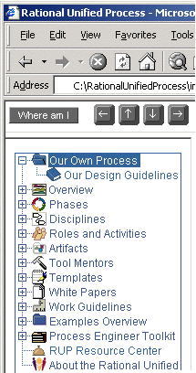

Process Engineer Toolkit >
User's Guide >
Working with Project Webs >
Process Engineer Toolkit >
User's Guide >
Working with Project Webs >
 Modifying the Treebrowser
Modifying the Treebrowser
Process Engineer Toolkit >
User's Guide >
Working with Project Webs >
Modifying the Treebrowser
Toolkit:
|
| Files | Comments |
| applet/orytree.htm | This is where the Treebrowser applet is "declared". If you want to change the applet's layout and so on, do it here. |
| applet/tree.dat | This files defines the structure of the Treebrowser that corresponds to the static part of the process. It also contains references to the subtree menu files (listed below) for the Treebrowser, that correspond to the dynamic part of the process. |
| applet/rpw_discipline_subtree.dat | This subtree defines the structure of the disciplines in the Treebrowser. |
| applet/rpw_artifact_subtree.dat | This subtree defines the structure of the artifact sets in the Treebrowser. |
| applet/rpw_role_subtree.dat | This subtree defines the structure of the role sets in the Treebrowser. |
| applet/rpw_tool_subtree.dat | This subtree defines the structure of the tool mentors in the Treebrowser. |
Each row in the tree.dat file consists of seven fields, separated by a "*". See Toolkit: The Treebrowser applet for a more detailed specification of this format. The following examples show different usage patterns for defining menu items in the Treebrowser. First, a brief description of each of the seven fields :
Example 1:
A link to a page within the RUP folder structure:
0*Glossary*../process/glossary.htm* *bookc.gif*booko.gif*f*
The target frame in this example is set to a whitespace character to indicate that the page will be opened in the main frame of the same browser session.
Example 2:
A link to a page outside the RUP folder structure:
0*Rational*http://www.rational.com*_blank*bookc.gif*booko.gif*f*
The file to open in this example is a URL to an external web site. The target-frame field is set to "_blank" to open a new Web browser window.
Example 3:
A reference to the roles subtree from the main tree.dat file:
0*Role Sets*../process/workers/ovu_works.htm* *workers.gif*workers.gif*f*
1*Role Sets*rpw_role_subtree.dat* *workers.gif*workers.gif*f*
The example above shows the format of a reference to a subtree. The first line describes the title of the Treebrowser entry, and a reference to the page to open if selected. The second line indicates that the structure of this sub tree is defined in a separate menu file.
Example 4:
The format of menu entries within a subtree menu file (for example,
rpw_role_subtree.dat):
0*Additional Role Set*../process/workers/wks_others.htm* *workers.gif*workers.gif*f*
1*Any Role*../process/workers/wk_any.htm* *workers.gif*workers.gif*f*
A subtree menu file follows exactly the same format as the main menu file, except that the levels in the tree are local to this subtree. Since the role subtree was included (see example 3) at the top level of the Treebrowser hierarchy, the entries defined as level zero in this subtree (for example, 'Additional Role Set') will be displayed at level one in the Treebrowser. Subsequently, the 'Any Role' entry from the example above, will be displayed at level two in the Treebrowser.
See Treebrowser documentation for further details.
 For a detailed explanation of the tree.dat and the subtree files, see
"The
data files" in the Treebrowser documentation.
For a detailed explanation of the tree.dat and the subtree files, see
"The
data files" in the Treebrowser documentation.
An easy way to modify the RUP, and/or your project Web, is to add links to your own material in the Treebrowser.
For example, the beginning of the tree.dat file in the RUP looks like this:
| img.zip*
0*Overview*../process/ovu_proc.htm* *humpchart.gif*humpchart.gif*f* |
If you want to add entries in the Treebrowser, add new rows in the tree.dat file. For example, if you want to add an entry at the top-level to "Our Own Process" and a link to a page "Our Design Guidelines" one level below, the tree.dat would look as follows:
| img.zip* 0*Our Own Process*../our_process/index.htm* *folderc.gif*foldero.gif*f* 1*Our Design Guidelines*../our_process/desguide.htm* *fbookc.gif*booko.gif*f* 0*Overview*../process/ovu_proc.htm* *humpchart.gif*humpchart.gif*f* 1*Site Map*../sitemap/sitemap.htm* *ovutable.gif*ovutable.gif*f* ... ... |
The modified RUP Treebrowser would then look like this:

When you add links to pages outside of the Web site structure, we recommend that these pages are opened in a new Web-browser window. This is most important for links added to the RUP— if you do not display the page in a new Web-browser window, it will be displayed in the main frame, which may cause the navigation buttons to create JavaScript errors. The reason for this is that the navigation buttons must have read access to the page.
<a href="another page" target="_blank">another pages<a>
Starting with the spring 2001 release (version 2001.04.00) of the RUP, the Web site that you are looking at is a result of an automated generation from an underlying RUP process model expressed using The Unified Modeling Language. The modeling and publication of web sites are done in the tool Rational Process Workbench™ (RPW). See the RPW tool mentor section for further details. Here, we discuss how modifying the treebrowser impacts the process of republishing and future upgrades of the RUP web site.
If you don't use RPW for configuring the RUP, please refer to the page Basic Modification of The Rational Unified Process for details.
However, if you use RPW for process configuration, please be aware of the following issues :
After you have made your changes to the Treebrowser (tree.dat or any of it's subtree files), you will be able to view the result next time you load the RUP Web site. If you don't want to close down your Browser session, you are able to see the result by selecting <Refresh> in your browser. Note that the some Browsers require <Shift> + <Refresh> to reload properly.
If the Treebrowser does not load after a manual change, it is likely that there is an error in one or more of the changed rows. You should inspect the file(s) and carefully check that the format specified in Treebrowser Applet, section The Data Files is followed. Below is a list of typical mistakes :
|
Rational Unified
Process
|